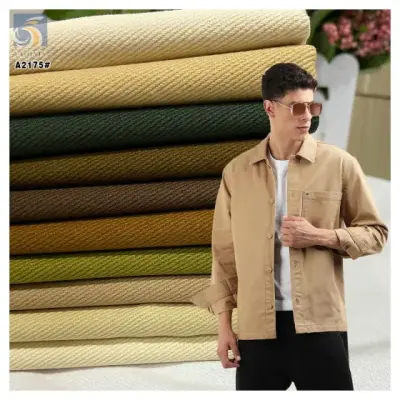
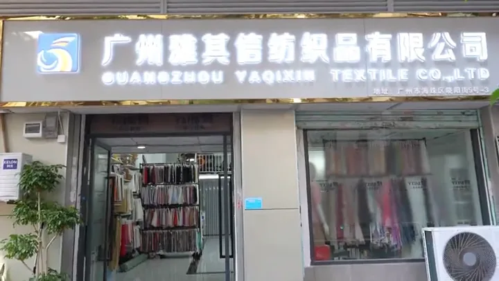
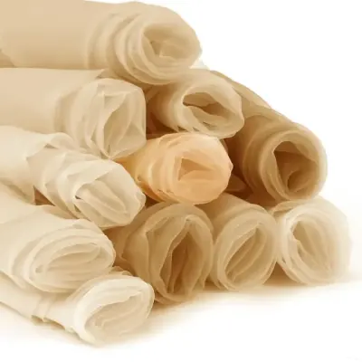
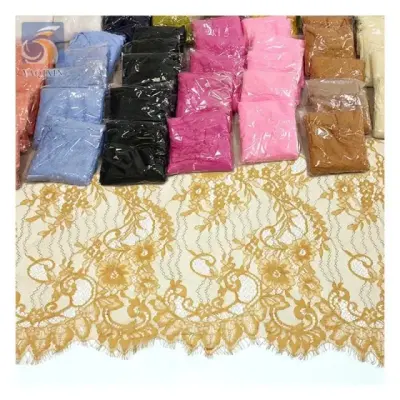
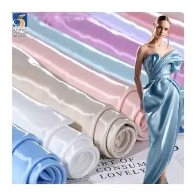
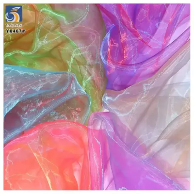
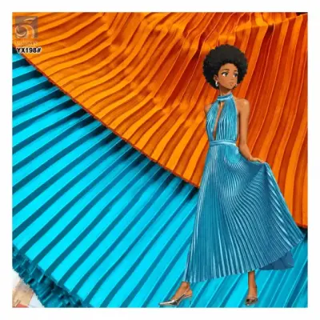

Algodón
Algodón liso y sarga
Loneta, popelín y sarga de algodón para camisas, ropa de trabajo, pantalones, bolsos y prendas estructuradas.
Consultar esta categoría
Compare algodón, tul, malla, organza, encaje, satén y tejidos plisados con apoyo directo para muestras, colores, MOQ, embalaje y exportación.
Explique su uso, composición objetivo, peso, ancho, color, cantidad y fecha de entrega. Nuestro equipo le orientará hacia una opción de stock o desarrollo personalizado.

Loneta, popelín y sarga de algodón para camisas, ropa de trabajo, pantalones, bolsos y prendas estructuradas.
Consultar esta categoría
Opciones lisas, brillantes, estampadas, bordadas y elásticas para novias, vestidos, danza y colecciones de fiesta.
Consultar esta categoría
Encaje de pestañas, bordado, con perlas, de lentejuelas y ribetes para prendas de ceremonia y moda.
Consultar esta categoría
Construcciones mate, brillantes, líquidas, elásticas y mikado para vestidos, formalwear y forros.
Consultar esta categoría
Organza ligera, crepé, líquida y brillante para capas, faldas, vestidos y vestuario escénico.
Consultar esta categoría
Plisado de malla, satén y gasa para siluetas con volumen, faldas y prendas de ocasión.
Consultar esta categoríaNota de catálogo: esta es la entrada en español del sitio. Indique el SKU o tipo de tela que busca y prepararemos fichas técnicas, opciones de color y una cotización en español para su solicitud.
No obligamos a completar campos innecesarios. Puede comenzar por una foto, una muestra de color, un SKU o una descripción sencilla de su proyecto.
Envíe una imagen, un número de artículo, el uso final o los requisitos de composición, peso, ancho y color.
Comparamos opciones disponibles, cantidades mínimas, muestras y viabilidad de color antes de confirmar el pedido.
Tras confirmar calidad y pedido, alineamos la producción, el embalaje y el siguiente paso logístico con su equipo.
Escríbanos por WhatsApp con el tipo de tela, una imagen de referencia, cantidad estimada y destino. Le responderemos con las opciones de stock o personalización más adecuadas.